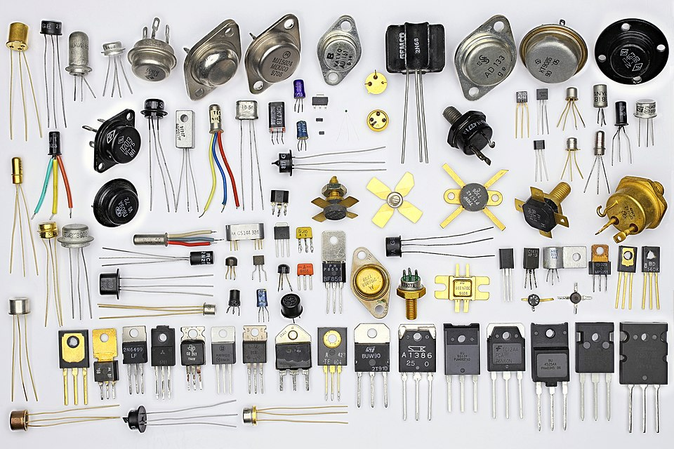
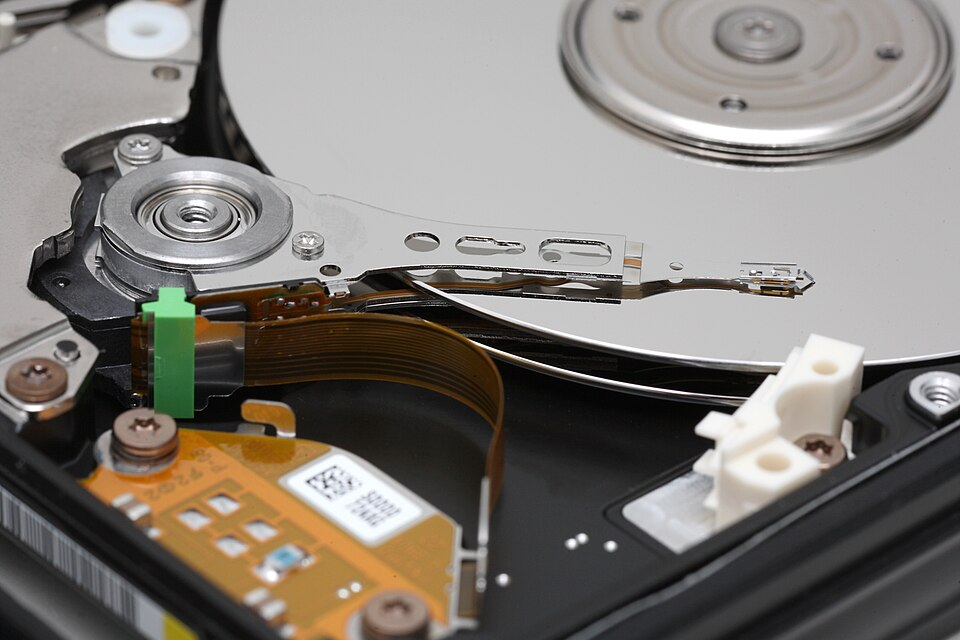

At the end of Chapter 1, we understood what binary is — a number system with two digits — and how to work with it. But we left a big question unanswered: why do computers use binary in the first place?
The answer isn't mathematical. It's physical. To understand it, we need to think about how a computer actually stores and moves information — not as ink on paper or pixels on a screen, but as real, measurable properties of the physical world.
From Concept to Physical Reality
Think about what a 1 or a 0 actually is for a moment. Right now, as you read this, a 1 is some dark pixels on your screen, or perhaps some ink on a printed page. That's it. The concept of "one" exists in your brain; the pixels or ink are just a physical encoding of that concept.
A computer needs the same thing: a physical phenomenon that can represent two distinct states. Something the machine can reliably write, read, store, and transmit at extraordinary speed and scale.
Our modern computers use three such phenomena:
- Electrical — for processing and transmission
- Magnetic — for long-term storage
- Optical — for removable storage and long-distance transmission
Let's go through each one. We'll spend the most time on electrical representation, because that's where the magic — and the answer to "why binary?" — lives.
Electrical Representation: Processing and Storage
You probably know that computers run on electricity. But "runs on electricity" is a bit like saying a car "runs on explosions." True, but it glosses over quite a lot.
The fundamental building block of every modern processor and memory chip is something called a transistor. A transistor is, at its core, an electronically controlled switch. Apply a voltage to its control input (called the gate), and current flows through it. Remove that voltage, and current stops. On or off. Conducting or not conducting.
Sound familiar? It should. That's binary.
An electronic switch with no moving parts. A small voltage applied to its gate either allows or blocks the flow of current. The two states — conducting and non-conducting — represent 1 and 0 respectively.
Now, here's the part that should make your jaw drop a little. The processor in a modern laptop contains somewhere between 10 and 100 billion transistors. Each one is switching between on and off billions of times per second. That is the engine of modern computing — nothing more, nothing less.
Each transistor holds exactly one bit. It is either on (1) or off (0). That's the whole trick. The staggering complexity of everything a computer does — running an operating system, rendering video, training an AI model — is ultimately built on billions of tiny switches flipping on and off very, very fast.
Why Not Ten States?
This is where the "why binary?" question finally gets its proper answer.
In theory, a transistor could be designed to hold multiple voltage levels — say, ten distinct levels representing the digits 0 through 9. Then you'd have a decimal computer, and each transistor would store a full decimal digit instead of a measly bit. Wouldn't that be more efficient?
In theory, yes. In practice, it's a disaster. Here's why.
Voltage in a real circuit is noisy. Temperature fluctuates. Components age. Electrical interference from nearby circuits bleeds in. If you're trying to distinguish between ten precise voltage levels — say, 0.5V, 1.0V, 1.5V, 2.0V, and so on — a little noise is catastrophic. How do you tell 1.0V from 1.1V when your circuit is warm and your neighbor's clock signal is radiating interference?
Two states, on the other hand, are robust. You don't need to measure a precise voltage — you just need to answer one question: is the voltage high or low? You can draw a threshold line down the middle, call everything above it a 1 and everything below it a 0, and tolerate a huge amount of noise without ever misreading a bit. The system is fault-tolerant by design.

Electrical Representation: Transmission
So transistors handle storing and processing bits. But what about moving bits — from one component to another inside a computer, or between computers entirely?
Here, electricity is still the medium, but the encoding is different. Instead of the static on/off state of a transistor, transmitted bits are represented as a sequence of high and low voltage pulses over time. Think of it like Morse code, but instead of dots and dashes, you have high voltage and low voltage — and instead of a telegraph operator, you have a clock signal coordinating everything.
That clock signal is worth understanding. Inside your CPU, a crystal oscillator pulses at a fixed frequency — billions of times per second. Each pulse is one "tick," and on each tick, the processor can sample the voltage on a wire and read it as a 1 or a 0. The clock speed of a processor — measured in GHz (gigahertz, or billions of cycles per second) — is literally how many times per second it can do this sampling.
The frequency at which a processor's internal clock oscillates, measured in GHz (gigahertz). A 3.0 GHz processor completes 3 billion clock cycles per second. Each cycle is an opportunity to read or write a bit. We'll revisit clock speed in depth in Chapter 4.
This is why faster processors aren't magic — they're just switches and wires operating at higher frequencies. The physics is the same. The speed is not.
Magnetic Representation
Transistors are fast and dense, but they have one significant limitation: they require constant power. Cut the electricity, and the state is gone. This is why your computer loses unsaved work when it crashes — RAM, which is built from transistors, is volatile. It forgets everything when the power goes out.
For long-term storage — data that needs to survive a power cycle — computers have historically turned to magnetism.
You're probably familiar with the concept of a magnet having two poles: north and south. A magnetic material can be polarized in one direction or the other, and crucially, it stays that way without any power required. That makes it ideal for storage.
A hard disk drive (HDD) stores bits by magnetizing tiny regions of a spinning metal platter in one of two directions. North = 1. South = 0. (Or vice versa — the convention varies by manufacturer, but the principle is the same.) A read/write head floats nanometers above the platter, detecting and flipping these magnetic orientations as the disk spins beneath it.
A storage device that encodes bits as magnetic orientations on a spinning platter. Non-volatile — data persists without power. Capacity is high and cost per gigabyte is low, but mechanical parts make it slower and more fragile than solid-state alternatives.

Magnetic tape operates on the same principle — magnetic particles on a long ribbon of film — and remains in use today for archival storage and backup, where cost per gigabyte matters more than access speed. Don't let the retro mental image fool you; tape libraries backing up enterprise data centers are very much a present-day technology.
The key property of magnetic storage is non-volatility: the magnetic orientation of a region on a platter doesn't care whether the power is on or off. The data just sits there, waiting. This is why your files are still there when you restart your computer — they're encoded as tiny magnets that aren't going anywhere.
Optical Representation
The third physical phenomenon computers use to represent bits is light — specifically, the presence or absence of a reflective surface detectable by a laser.
If you've used a CD, DVD, or Blu-ray disc, you've handled optical storage. The surface of a disc is covered in a spiral track of microscopic pits (tiny indentations) and lands (flat areas). A laser in the drive shines onto the spinning disc; a land reflects the light cleanly back to a sensor, while a pit scatters it. Clean reflection = 1. Scattered light = 0.
Storage media that encodes bits as physical surface features (pits and lands) readable by laser. Examples include CD, DVD, and Blu-ray. Non-volatile and durable, but lower capacity and slower than magnetic or solid-state alternatives.
Optical storage is non-volatile like magnetic storage, but it's generally slower, lower capacity, and less convenient than a hard drive or SSD. Its advantages are durability and portability — a pressed disc (like a commercial movie or software disc) can last decades and survive conditions that would destroy a hard drive.
Optical principles also apply to long-distance data transmission. Fiber optic cables transmit bits as pulses of light rather than voltage pulses. The physics differs from disc storage — rather than pits and lands, you have light on and light off — but the underlying idea is the same: two distinguishable states of a physical medium, carrying binary information.
Putting It Together
At this point it's worth stepping back and mapping these physical representations to where you actually encounter them in a real computer system. Each has tradeoffs that make it the right tool for a specific job.
| Representation | Physical Phenomenon | Volatile? | Speed | Primary Use |
|---|---|---|---|---|
| Electrical (transistor) | Voltage state (high/low) | Yes — loses data without power | Fastest | Processing (CPU), RAM |
| Electrical (signal) | Voltage pulses over time | N/A — in transit | Very fast | Data transmission between components |
| Magnetic | Magnetic pole orientation | No — persists without power | Slower | Long-term storage (HDD, tape) |
| Optical | Laser reflection (pit/land) | No — persists without power | Slow | Removable media, archival, fiber transmission |
Notice the pattern: the fastest representations are volatile, and the slowest are non-volatile. This tradeoff — speed versus persistence — runs through the entire field of computer architecture and is something we'll return to again and again throughout this book, especially in Chapter 5 when we discuss the storage hierarchy.
One More Thing: Scale
Before we move on, let's sit with the scale of all this for a moment.
A modern processor contains on the order of 50 billion transistors etched into a chip roughly the size of a postage stamp. Each transistor is around 3–5 nanometers wide. A human hair is about 80,000 nanometers wide. You could fit roughly 20,000 of the latest transistors across the width of a single strand of hair.
Each of those 50 billion transistors holds exactly one bit. And the processor switches them at speeds measured in GHz — billions of times per second.
This is what "digital computation" actually means, physically. Not software. Not algorithms. Not AI. At the very bottom: billions of microscopic switches, flipping on and off, representing 1s and 0s in the language we learned in Chapter 1.
Everything else is built on top of that.